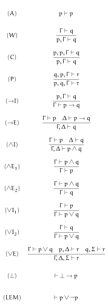
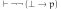
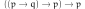
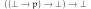
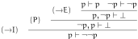
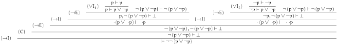
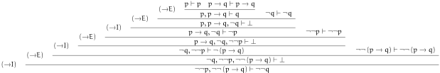

最小論理と直観主義論理について整理している過程ですこしおもしろいことに気づいたので、ここに記しておきます。
(2021-05-07)
基本的な論理体系についての知識は前提としますが、軽く触れておきます。まず古典（命題）論理というものがあり、つぎのような公理型と推論規則からなる体系です。
このうち最後の (LEM) を排中律と言い、古典論理からこれを除いた体系を直観主義論理と言います。また (⊥) を爆発律と言い、直観主義論理からこれを除いた体系を最小論理と言います。
なおこの記事では命題論理にかぎった話をしますが、ひとくちに論理と言っても、述語論理などさまざまなものがありますので注意してください。
今回は最小論理に (⊥) の二重否定にあたるつぎのような命題を公理型として加えた体系に関する話をします。
パースの法則とはつぎのかたちをした命題を言います。
これは直観主義論理では証明できない恒真式（※）として知られています。
（※）命題変数に真偽のいずれをどんな組みあわせを代入しても全体として常に真となるような命題のこと。
さて ¬p = p→⊥ ということに注意すると先ほどの爆発律の二重否定は
となり、パースの法則の一部に ⊥ を代入したかたちをしています。直観主義論理では二重否定の導入はできますからもちろんこれは証明できます。
最小論理ではこれは（たぶん）証明できません（※）。というのは最小論理では爆発律がないので、実際のところ、⊥ というのは変数とあまりちがいがないからです。ゆえに最小論理では
が証明できないのであれば
も証明できません。もちろんパースの法則は直観主義論理でも証明できませんし、またそれより弱い体系である最小論理でも証明できません。そういうわけで最小論理で爆発律の二重否定を証明することはできないわけです。
（※）理屈から言って証明できないと考えることは自然だと思いますが、きちんとした文献でそういった記述を読んだことはないのでやや自信なし。
最小論理では爆発律の二重否定は証明できませんので、最小論理に爆発律の二重否定を加えた体系は最小論理より真に強い（※）体系と言えます。また直観主義論理では二重否定の導入はできますので直観主義論理よりは弱く、また二重否定の除去はできないため、直観主義論理より真に弱い体系です。
（※）体系の強さを考えるときは「強い」「弱い」を「以上」「以下」、「真に強い」「真に弱い」を「超」「未満」といった意味で使います。この強さというのはふつう証明できる命題の集合の包含関係で考えます。
また最小論理ではつぎのようにして二重否定の導入
と排中律の二重否定
が証明できます。
このように二重否定の導入があるので、最小論理で証明できる命題の二重否定は必ず最小論理で証明できます。さらに排中律の二重否定は最小論理の範囲で証明可能ですから、爆発律の二重否定を公理とすることにより ¬¬ をある種の『古典論理コンテキスト』だと思えば、¬¬ のなかで古典論理の命題が証明できるようになるわけです。
爆発律と排中律を仮定すれば古典論理の命題はすべて証明できますし、それらを (→I) で (⊥→p)→(q∨¬q)→… といったかたちにすることは簡単です。よって ¬¬ のなかで古典論理の命題が証明できることを示すには¬¬p, ¬¬(p→q) から ¬¬q が結論できることを示せばじゅうぶんでしょう。つぎがその証明図です。
型システムとして考えるのであれば ¬¬(⊥→p) はある種の『エラーを投げる作用素』と捉えることができます。 ¬¬ は Monad のようなコンテキストです。¬¬ を M と表し ⊥ を Bottom と表せば
raise :: M (Bottom -> a)
となります。こういったものを Monad として実装する場合、ふつう
raise' :: Bottom -> M a
といった型つけになり、実際これはつぎのように実装可能です
raise' b = do
f <- raise
return $ f b
一方でその逆、つまり raise を raise' で実装することは (undefined や unsafePerformIO をつかわないかぎり) できません（※）。
（※）Comonad のような『いつでも中身をとりだせる』具体的な構造では実装できる場合もあります。
M は実際（型のうえでは）継続モナドそのものでもあります。しかし raise :: M (Bottom -> a) のような定義は Haskell の継続モナドでは（たぶん）困難です。実際にこういった実装をするにはおそらく FFI を使うか、あるいは GHC のプリミティブを使うなどしてかなり黒魔術的なコードを書く必要があると思われます。
この定義は広域脱出ができる変数のスコープを制限しつつ、かつ (いわゆる純粋な関数と同じ signature で) 継続が使えるのでおもしろいと思います。言語の設計によってはトップレベルの定義とそれ以外を区別することで、M を明示しないスタイルでなおかつ（いわゆる）純粋な関数とそうでないものを区別するようなものも考えられるかもしれません。
最後にとりあげる話題は限定継続と Effect System のことです。実際この定義は限定継続と似ているような感じもします。一方でそうではない感じもします。限定継続や Effect System との関係を考えてみるのもおもしろいと思っています。これらはまだあまり詰めて考えられていませんが、今後の話題としておもしろいかもしれません。